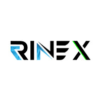

About
Myself
Hi! Myself Vinayaka V Nayak
From Karkala,
A passionate web designer with a love for crafting beautiful and functional
digital experiences. With a background in both design and coding, I'm all about blending aesthetics
with seamless functionality to create websites that not only look stunning but also perform flawlessly.
Education
Experience
(Sep 2023 - Oct 2023)
Data Science and Machine Learning Intern
Renix.AI
(Oct 2023 - Nov 2023)
Web Development Intern
MotionCut
(Nov 2023 - Dec 2023)
Salesforce Developer Intern
Salesforce

Projects
Some of my recent work

Interactive Portfolio
HTML | CSS | JavaScript | Bootstrap
Developed a visually captivating and user-friendly interactive portfolio website, showcasing projects, skills, and accomplishments to effectively demonstrate expertise and enhance professional online presence.
View ProjectStudent Database Management System
Flask | Python | JavaScript | MySQL | HTML | CSS | Bootstrap
Developed a Student Database Management System (SDMS) using Flask, which streamlined student information management by enabling efficient addition, updating, and retrieval of student records. The system featured secure user authentication, advanced search and filter capabilities, and a user-friendly interface. Utilizing a MySQL database for backend storage, this project significantly reduced administrative workload and improved data accuracy and management efficiency in an educational setting.
View ProjectQR Code Generator Web Application
HTML | CSS | JavaScript | API
Developed a web application for generating QR codes, enabling users to quickly and easily create custom QR codes for various purposes, including URLs, text, contact information, and more. The application features a user-friendly interface, customization options, and supports multiple QR code formats.
View ProjectWeather Application
JavaScript | API | HTML | CSS | Bootstrap
Developed a weather application that provides real-time weather updates, forecasts, and alerts. The app features an intuitive interface, allowing users to view weather conditions for multiple locations, including temperature, humidity, wind speed, and precipitation. It also includes interactive weather maps and the ability to save favorite locations.
View ProjectRetail Billing System
Python | MySQL | TKinter UI
Developed a comprehensive Retail Billing System to streamline billing processes in retail environments. The system features efficient management of product inventory, customer transactions, and sales reporting. It supports barcode scanning, multiple payment methods, and integrates seamlessly with point-of-sale hardware to ensure accurate and smooth operations.
View ProjectCoffee Shop Website
HTML | CSS | JavaScript
Developed a comprehensive Retail Billing System to streamline billing processes in retail environments. The system features efficient management of product inventory, customer transactions, and sales reporting. It supports barcode scanning, multiple payment methods, and integrates seamlessly with point-of-sale hardware to ensure accurate and smooth operations.
View ProjectCar Price Prediction
Python | Linear Regression | scikit-learn
Developed a Car Price Prediction model using linear regression to estimate the market value of used cars based on features such as make, model, year, mileage, and condition. The project involved data collection, preprocessing, and feature engineering to prepare the dataset. The linear regression model was trained and tested to ensure accuracy in price predictions, enabling users to make informed decisions in buying or selling used cars. This project showcased the application of statistical methods and machine learning to solve real-world problems and improve decision-making processes.
View ProjectSpam Email Detection
Python | scikit-learn | Logistic Regression
Developed a Spam Email Detection system using logistic regression with scikit-learn to classify emails as spam or not spam. The project involved collecting a labeled dataset, preprocessing text data, and performing feature extraction using techniques like TF-IDF. The logistic regression model was trained and evaluated to ensure high accuracy in detecting spam emails. This project demonstrated the ability to apply machine learning algorithms to real-world problems, enhancing email security and improving user experience by filtering out unwanted messages.
View ProjectMedical Insurance Cost Prediction
Python | Linear Regression | scikit-learn
Developed a Medical Insurance Cost Prediction model using machine learning to estimate individual insurance costs based on factors such as age, gender, BMI, children, smoking habits, and region. The project involved data collection, preprocessing, and feature engineering to prepare the dataset. Various regression algorithms, including linear regression and decision trees, were implemented and evaluated for accuracy. This model provided reliable cost predictions, aiding insurance companies and individuals in financial planning and decision-making. The project showcased the practical application of data science techniques to solve real-world financial forecasting problems.
View ProjectBreast Cancer Detection
Python | scikit-learn | Logistic Regression
Developed a Breast Cancer Detection model using machine learning to classify tumors as malignant or benign based on features derived from medical imaging. The project involved collecting and preprocessing a labeled dataset, performing feature extraction, and training classification algorithms such as support vector machines (SVM) and random forests. The model was evaluated for accuracy, sensitivity, and specificity to ensure reliable detection. This project demonstrated the application of machine learning in healthcare, enhancing early diagnosis and improving patient outcomes by assisting medical professionals in identifying cancerous tumors accurately.
View ProjectWine Quality Prediction
Python | Linear Regression | scikit-learn
Developed a Wine Quality Prediction model using machine learning techniques to assess and classify the quality of wines based on their chemical attributes. By preprocessing a dataset that includes factors like acidity levels, residual sugar, pH, and alcohol content, the model employs algorithms such as random forests or support vector machines to accurately predict wine quality ratings. This project demonstrates the practical application of data science in enhancing quality control processes within the wine industry, helping producers optimize product standards and customer satisfaction.
View ProjectRock or Mine Prediction
Python | scikit-learn | Logistic Regression
Developed a Sonar Rock or Mine Prediction model using machine learning to classify underwater objects based on sonar signals. By preprocessing acoustic data and extracting key features, the model employs algorithms such as logistic regression or support vector machines for accurate classification. This project showcases the application of machine learning in underwater exploration and maritime security, providing a tool to distinguish between natural rock formations and man-made objects like metal mines, thereby aiding in environmental monitoring and safety efforts in aquatic environments.
View ProjectDeTox
Flask API | BERT Model | transformers | Jinja2 templates | Google OAuth 2.0 | YouTube Data API | Python
Developed "DeTox" a web application utilizing FastAPI, NLP BERT models, and Jinja2 templates to detect and delete toxic YouTube comments in real-time, significantly improving content moderation efficiency with an intuitive user interface
View ProjectPPT Automation using UiPath
UI Path
Developed an automation solution using UiPath to streamline the creation of PowerPoint presentations by automatically extracting and integrating data from various sources like Excel, databases, and web applications. This automation process generated slides, formatted content, and applied design templates, significantly reducing manual effort and ensuring consistency and accuracy. The project enhanced productivity by enabling the rapid production of professional presentations, saving time, and improving efficiency in report generation and data presentation tasks.
View ProjectVehicle Accident Alert System
Arduino Uno
Accelerated emergency response time and mitigated accident-related fatalities by developing a Vehicle Accident Alert System, promptly notifying authorities and emergency services upon detecting potential accidents, thereby contributing to heightened road safety and saved lives.
View Project

Smart Waste Management
Moisture Sensor
Implemented an IoT-driven Smart Waste Management System that optimized waste collection routes and schedules, resulting in significant cost savings and operational efficiency improvements.
View ProjectTemparature Analysis of PV module
Ansys
Implemented a meticulous temperature analysis of PV solar modules using ANSYS, applying simulation techniques to refine system design and enhance cooling strategies, underscoring my proficiency in improving solar panel efficiency and longevity.
View Project{kind=link}
Flower Pot Stand
Steal Rods
Designed and engineered a variety of stylish and functional flower pot stands tailored to enhance the display and organization of potted plants in diverse indoor and outdoor environments. Each stand was meticulously crafted using premium materials such as wood, metal, and durable plastics, ensuring robust support and aesthetic appeal. These designs aimed to elevate the visual appeal of spaces while providing practical solutions for optimal plant growth and presentation, reflecting a keen eye for detail and commitment to quality craftsmanship
View Project{kind=link}
Skills
-
Programming Skills
Advanced:C,HTML/CSS,MySQL
Intermediate:Java,JavaScript,Python
Beginner:React,PHP
View Work -
Web Development
React
Flask
Django
HTML/CSS
JavaScript
Bootstrap
View Work -
Microsoft Office
Microsoft Excel
Microsoft PowerPoint
Microsoft word
View Project -
SolidWorks
3D Modeling
Mechanical Design
Simulation and Validation
View Project -
MathWorks
MatLab
Simulink
Simscape
View Project -
ANSYS
Geometry Modeling
Thermal Analysis
Fluid Dynamics
View Project -
UI Path
Activities
Automation
View Project